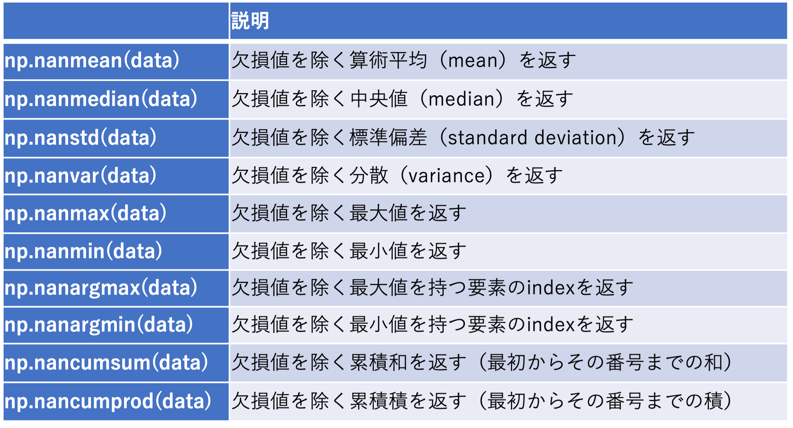

NumpyのTIPS
目次
Numpyの数学関数
- Numpyの主要な数学関数一覧

Numpyの統計処理
- 統計処理のインスタンスメソッド一覧（dataがインスタンスの場合）
dataがPandasのSeriesやNumpyのndarrayの場合
median、skew、kurtosisは、PandasのSeriesのみで利用可能
Numpyの統計処理（欠損あり）
- Numpyの統計処理（欠損処理あり） 
dataがPandasのSeriesやNumpyのndarrayの場合
data.nanmean()のようには使用できない
Numpyのデータ形式
Numpyのデータ型一覧
- Numpyのデータ型一覧
dtype=np.'型コード'
Numpyバイナリデータ読み書きの書式一覧
- Numpyバイナリデータ読み書きの書式一覧

読み込む場合：d = np.fromfile("ファイル名", dtype='コード')
書き出す場合：np.array(d).astype('コード').tofile("ファイル名")
単精度浮動小数点型のコードはf4をfと省略可能
Numpyの配列
配列ndarrayの作成
- 配列ndarrayの作成（既存のデータから）
入力データvarはlistなどnp.array(var)
- 配列ndarrayの作成（定数）
配列全部を同じ値に初期化するa = np.zeros((ndim, kdim, jdim, idim)) # 全ての要素が0 b = np.ones((ndim, kdim, jdim, idim)) # 全ての要素が1 c = np.ones((ndim, kdim, jdim, idim)) * 10.0 # 全ての要素が10 d = np.zeros((ndim, kdim, jdim, idim), dtype=np.int32) # 全ての要素が0、整数型を指定
idim：経度方向のグリッド数、jdim：緯度方向のグリッド数、kdim：高度方向のグリッド数、ndim：時間方向のグリッド数
Numpyで利用可能な型はNumpyのデータ型一覧参照
配列の要素の入れ替え
- 配列の転置
varが２次元の行列の場合、次のいずれでも可能var = var.T var = np.transpose(var)
- 配列の成分入れ替え
配列varの成分を3、0、2、1の順に入れ替えるvar = var.transpose(3, 0, 2, 1)
- 内積
配列x、yの内積を計算するnp.dot(x, y)
Numpy配列成分の演算
Numpyの機能で演算できる場合は、極力そちらを使う。
- 経度、緯度方向のループを回す場合
itertoolsを使うと高速化できるimport itertools i_list = np.arange(idim) j_list = np.arange(jdim) for ij in itertools.product(i_list, j_list): i = ij[0] j = ij[1] 処理
[top]